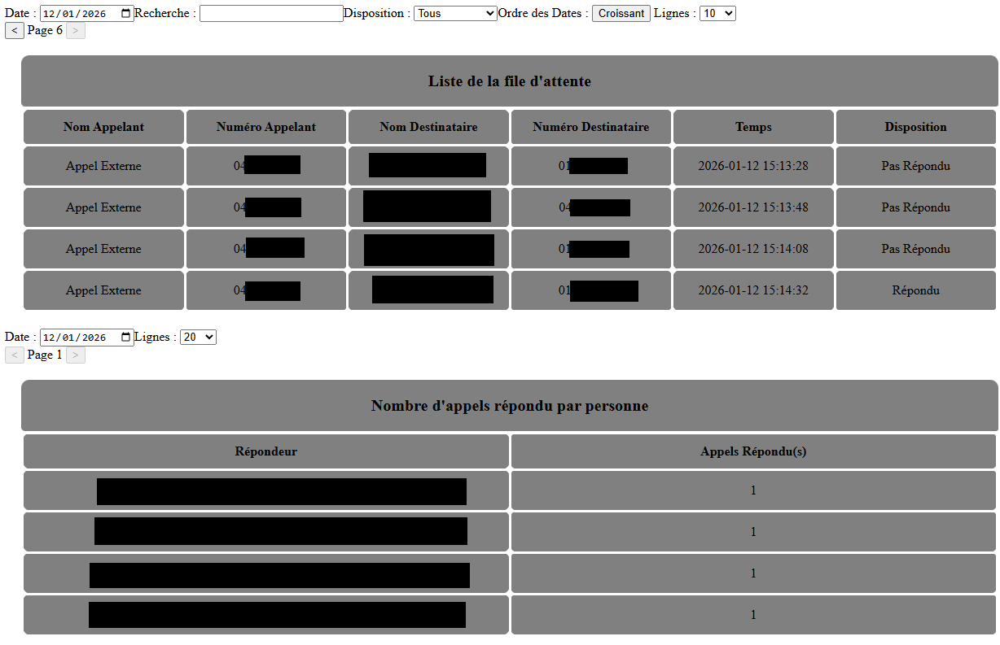
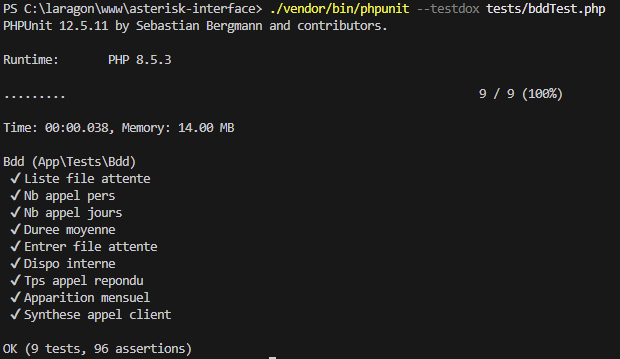
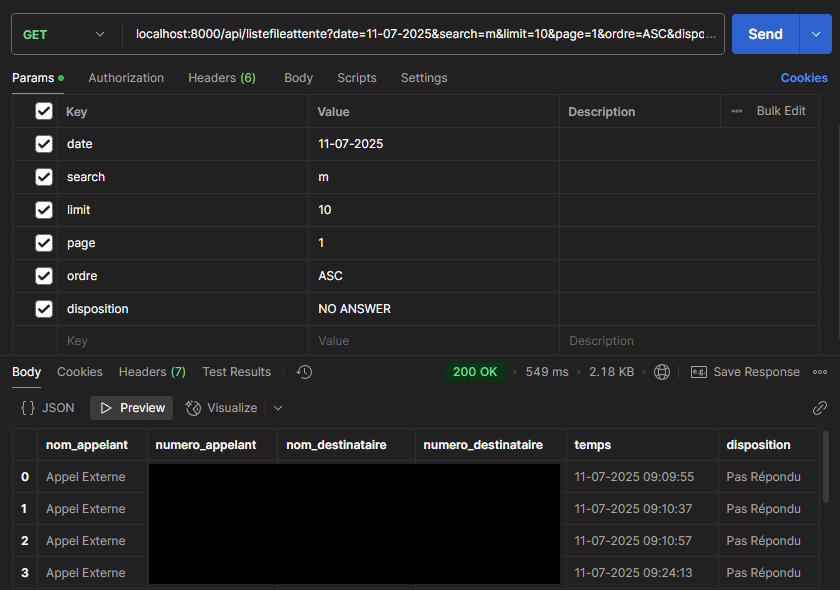
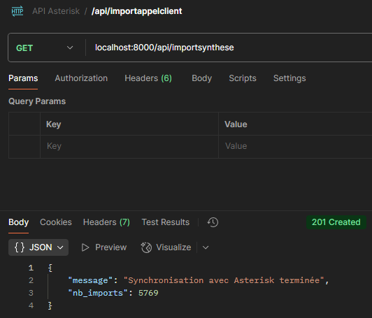
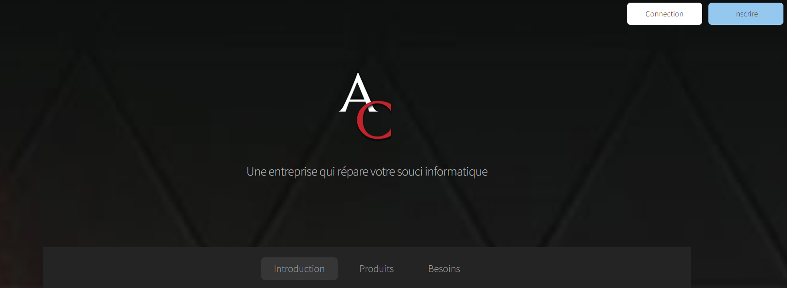
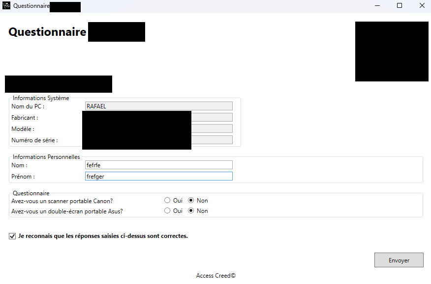

Stages
Stages pendant le BTS

Une entreprise experte en hébergement créée en 2003.
L'entreprise est composée d'une équipe d’experts en internet et en réseaux.
Elle est implantée en région parisienne et lyonnaise.
Pour en savoir plus, cliquer ici.
Qu'ai-je fait chez Celeonet ?
Du 5 janvier 2026 au 13 Février 2026, J'ai travaillé sur trois projets :
- La création d'une application web interrogeant la base de donnée d'un serveur téléphonique.
- La mise en place de test unitaires en PHP.
- La création d'une API permettant obtenir les tables localement.
Application Web
Ce projet est une application web en HTML/CSS, JavaScript et PHP natif.
L'objectif est d'utiliser la BDD Asterisk pour obtenir des informations.
Grâce aux tables de cette base, il est possible d'effectuer des requêtes MySQL afin d'obtenir :
- La disponibilité des techniciens.
- La présence ou l'absence des techniciens dans les files de traitement des appels clients.
- Des statistiques sur les appels clients (liste des appelants, nombre d'appels, etc.).
Voici les tables faites réalisées pour le projet :

Petite précision : la synthèse provient d'une autre base de données nommée CallSupport.
Test Unitaires
Ce projet consistait à mettre en places des test unitaires en PHP.
Ils sont réalisés avec le framework PHPUnit, permettant de vérifier automatiquement le bon fonctionnement des fonctions développées.
Voici un test exécuté directement dans le terminal :

API
Ce projet consistait à créer une API basée sur les mêmes bases de données.
Elle est développée avec le framework Symfony, permettant d'effectuer des requêtes GET.
Voici une des tables de l'API tester par Postman :

Grâce à cette API, il est possible d'automatiser l'importation d'une bdd vers une table d'une autre base.
Voici la synchronisation avec Asterisk et la table de la synthèse des appels clients :

Bilan
Développement web : HTML, CSS, JavaScript, PHP
Bases de données : MySQL
Réalisation de projets : application web, tests unitaires, API Symfony
Compétences : autonomie, analyse, rigueur, qualité du code
Framework : Symfony, PHPUnit
Outils : VScode, Postman, phpMyAdmin
Motivation pour poursuivre mes études en développement fullstack
Confirmation d'orientation professionnelle dans cette voie

Une entreprise de freelancing créée en 2018
Aide à résoudre les problèmes informatiques de ses clients (dans d’autres entreprises).
Effectue la délivrances d’outils (ordinateurs, composants, écrans, etc.).
Réalise également des applications web pour les clients.
Qu'ai-je fait chez Access Creed ?
Du 19 mai 2025 au 27 juin 2025, j'ai travaillé sur deux projets :
- La création du site web de l'entreprise.
- Un questionnaire pour une entreprise clientelle.
Site Web
Ce projet est un site web développé en HTML/CSS/JS et PHP natif.
L'objectif est de permettre aux clients de contacter l'entreprise via un formulaire dédié.
Ils peuvent également créer un compte sécurisé pour gérer leurs tickets.
Voici les pages réalisées :

Le Questionnaire
Ce projet est consistait à développer formulaire sous C#.
L'interface est réalisée en XAML, puis compilée en fichier exécutable.
Le but est de récupérer des informations sur les ordinateurs et leurs utilisateurs pour une entreprise.
Ces données sont ensuite enregistrées dans une base de données.
Voici l’apparence du formulaire :

Bilan
Développement web : HTML, CSS, JavaScript, PHP
Développement logiciel : C#, XAML
Bases de données : MySQL
Réalisation de projets : site web, formulaire applicatif
Compétences : autonomie, adaptation, analyse des besoins, mise en oeuvre structurée
Outils : VScode, Visual Studio, phpMyAdmin
Confirmation de l'intérêt pour le développement fullstack en entreprise
Motivation pour poursuivre dans cette voie